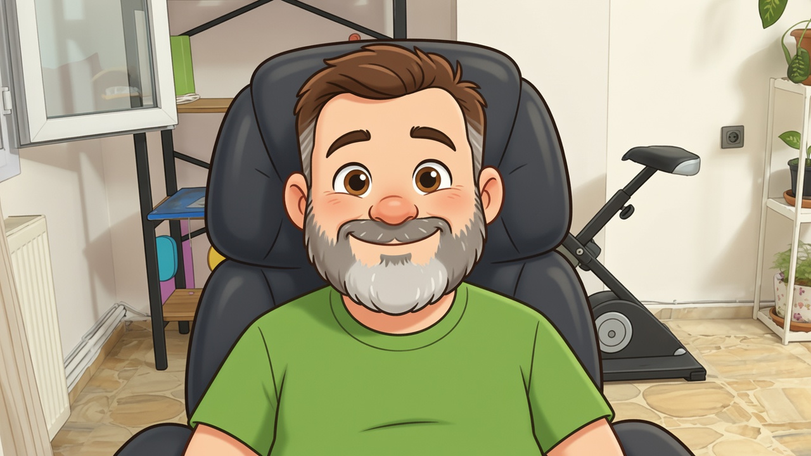
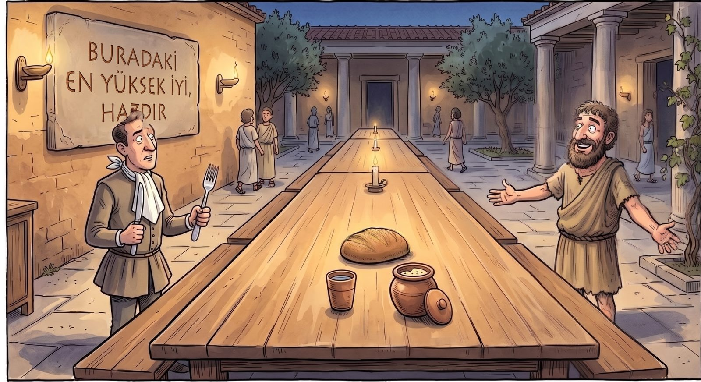
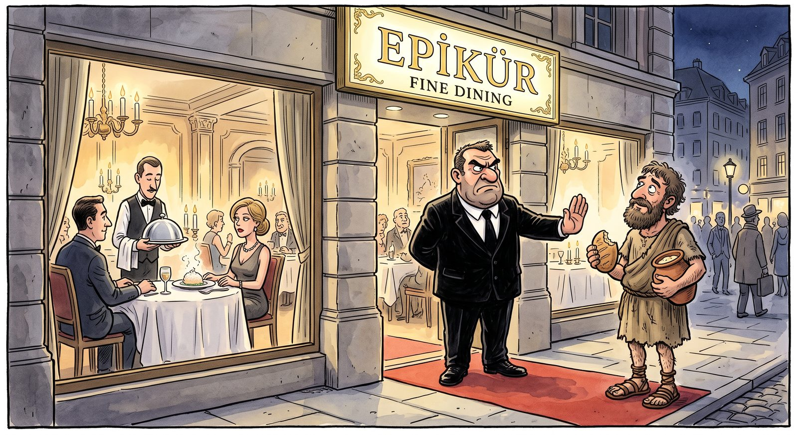

Dördüncü yazı · 27 Ağustos 2026
Adı Çalınan Adam
Önce Stoacılarla tanıştık, sonra bir tabak makarnanın peşine düştük. Bu ikisinin arasında bir adam sırasını bekliyordu ve doğrusu onu fazla beklettik. Adını herkes bilir — ama neredeyse herkes yanlış bilir. Bugün onun adını taşıyan sıfat, hayatı boyunca savunduğu şeyin tam tersi anlamına geliyor.
Aşağısı, o borcu ödediğimiz oturumun ayıklanmış dökümü. Sorular, itirazlar ve hiç ummadığım bir yerde karşıma çıkan bir hatıra benim; karşımda yine sabırla kaynak taşıyan araştırma ortağım — yapay zekâ.

Muratİlk yazıda bu işe nasıl bulaştığımı anlattım, ikincisinde Stoacılarla tanıştık, üçüncüsünde fast food'a karşı direnen o meşhur tabağı konuştuk. Bu arada Epikuros bizi hep bekledi. Dostumuza saygısızlık etmeyelim; hadi biraz da o ne demiş, ondan bahsedelim.
O zaman işe adamın doğduğu dünyayı kurarak başlayalım, yoksa söyledikleri havada kalır.
Epikuros MÖ 341'de doğuyor. On sekiz yaşında askerlik için Atina'ya geldiğinde Büyük İskender daha yeni ölmüş, imparatorluk generaller arasında paylaşılıyor ve o meşhur Atina bitmiş durumda: demokrasi lağvedilmiş, şehre Makedon garnizonu yerleşmiş, kararlar artık başka yerlerde alınıyor.
Bunun neden önemli olduğunu söyleyeyim. O güne kadar bir Yunanlının "iyi hayat" tarifi tek bir çerçeveye asılıydı: iyi bir yurttaş ol. Meclise git, şehrin için savaş, adın anılsın. Hayatın anlamı kamusaldı. Şimdi o çerçeve elinden alınmıştı. Meclis vardı ama hükmü yoktu. Sen de kalabalığın içinde, hiçbir şeye tesir edemeyen bir adamdın.
Bütün bir felsefe kuşağı — hem Stoacılar hem Epikuros — işte bu sorunun çocuğudur: Büyük çerçeve çöktüyse ve dışarıya hiçbir etkim yoksa, iyi bir hayatı nereden kuracağım?
Epikuros'un cevabı çok basit bir gözlemle başlıyor: kendine dikkatli bak, aslında hazzın peşinde koşmuyorsun — rahatlamanın peşinde koşuyorsun. Açsın diyelim. Canın ziyafet istemiyor, canın açlığın bitmesini istiyor. Bir dilim ekmek onu bitiriyor. Ekmeğin üstüne koyduğun her şey artık açlığı bitiren şey değil, sonradan icat ettiğin yeni bir iştah.
Buradan şu çıkıyor: iyi hayat üstüne bir şeyler yığarak kurulmuyor, seni kemiren şeyleri teker teker susturarak kuruluyor. Tıpkı sağlık gibi — sağlık hissettiğin bir şey değil, hastalığın yokluğu. En sevdiğim örnek de şu: hayatının en güzel anı pasta değildir, diş ağrının geçtiği andır. Pasta bir şey ekler; ağrının kesilmesi bir şey çıkarır. Ve mutluluk dediğimiz şey büyük ölçüde o çıkarma işlemidir.
Doğrusu bu beni çok etkiledi. Minimal bir yaşamdan bahsediyor. Bence bizi hızlı ve stresli bir hayata götüren şey de doymak bilmeyen hırslarımız; bir tanenin üstüne ikinciyi, üçüncüyü ekleme isteğimiz. Yani kalp ritmini düşürmek istiyorsan azla yetinmeyi bileceksin. Öyle değil mi?
Büyük ölçüde öyle, ama burada seni düzelteceğim — çünkü tam bu ayrım Epikuros'u anlamanın anahtarı.
"Azla yetinmek" onun dediği şey değil. Epikuros bir çileci değildi. Lüks gelirse tadını çıkar diyor; sadece hayatının taşıyıcı direğini onun üstüne kurma diyor. Sadeliği bir erdem olarak değil, bir sigorta olarak öneriyor: az şeye alıştığında iyi şeyler geldiğinde tadını daha çok alırsın, gittiğinde de yıkılmazsın. Yani mesele vazgeçmek değil, bağımlı olmamak. Aradaki fark küçük görünüyor ama koca bir hayat farkı.
Pratikte de basit bir testi var. Herhangi bir isteği alıp iki soru soruyorsun: Bu olmazsa canım yanar mı? ve bunun bir doyma noktası var mı?
Yemek: yanar, ve vardır — bir tabak yeter. Lüks yemek: yanmaz, ama gelirse zararı yok. Şöhret, servet, statü, adam yerine konmak: yanmaz — ve asıl mesele şu, doyma noktası yoktur. Kimse bir gün "tamam, yeterince tanınıyorum" demez. Epikuros diyor ki huzursuzluğunun neredeyse tamamı bu üçüncü kovadan gelir; kötü olduğu için değil, dipsiz olduğu için. Bunu MÖ 300'de, ortada bildirim sesi diye bir şey yokken söylüyor.
Bir de bu kovadan çıkardığı, bugün duyunca insanı çarpan bir sözü var: lathe biosas — fark edilmeden yaşa. Görünürlüğün peşinden koşma. Kişisel marka çağında bundan daha sapkın bir tavsiye zor bulunur.
Peki bu adam nasıl yaşıyordu? Okulu neresiydi, ne yer ne içerlerdi?
Okulu bir amfi değildi. MÖ 306 civarında Atina surlarının dışında bir bahçe satın aldı; okulun adı da öyle kaldı zaten — Bahçe. Bir grup arkadaş orada birlikte yaşıyor, kendi sebzesini yetiştiriyor, sade yiyor ve konuşuyorlardı. İçeri kadınları ve köleleri de aldı; devrin skandalı buydu ve adının kirlenmesi de büyük ölçüde buradan başladı.
Kapıda bir yazı olduğunu Seneca anlatır: yabancıya, burada iyi vakit geçireceği ve buradaki en yüksek iyinin haz olduğu söylenir. Ziyafet umuduyla içeri giren misafiri kapıda arpa çöreği ve bir bardak su karşılıyor. Adam kendi esprisini kendi yapıyor. Bir mektubunda da arkadaşından bir çömlek peynir istiyor — "canım istediğinde ziyafet çekebileyim diye" diyor. Ziyafeti bu.
Ve bence en önemlisi: mutlu bir hayat için bilgeliğin sağladığı her şey içinde en büyüğünün dostluk olduğunu söylüyor. Duygusal bir laf olarak değil, bir güvenlik hesabı olarak — talihi kontrol edemezsin ama etrafına güvende olduğun küçük bir çember örebilirsin. Bunu sadece söylemiyor da: vasiyetinde kölelerini azat etti, ölmüş arkadaşının çocuklarına bakılmasını şart koştu. Böbrek taşından, günlerce süren korkunç bir ağrının sonunda ölürken yazdığı mektupta, acıya karşı koyduğu şeyin geçmiş sohbetlerin anısı olduğunu söylüyor.
Yani teoriyi kurup kenara çekilmiyor. Üstünde ölüyor.

Sen bir yerde onun Stoacılarla çatıştığını söylemiştin. O hikâye neydi?
Önce sahneyi kur: Epikuros MÖ 306 civarı Bahçe'yi alıyor. Kıbrıslı Zenon MÖ 301 civarı, Atina agorasındaki Stoa Poikile — "Resimli Sundurma" — denen üstü kapalı revakta ders vermeye başlıyor. Okulun adı buradan geliyor; stoa, sundurma demek. Aynı şehir, aynı on yıl, yürüme mesafesi. Aynı yıkıntının içinde aynı soruya iki ayrı cevap.
Kavga dört yerde. Bir: İyi nedir? Epikuros haz der; Stoacılar yalnızca erdem der, hazzı hayatın amacı yapmayı alçaltıcı bulur ve Epikurosçular için "sürü" imasını hiç bırakmazlar — Horatius yüzyıllar sonra kendisiyle dalga geçerken "Epikuros sürüsünden bir domuz" diye yazacak kadar yerleşmiş bir hakaret bu.
İki: Evrenin bir planı var mı? Asıl uçurum burada. Stoacılara göre kozmos akıllıdır, her şey olması gerektiği gibi olur, sana düşen kendi isteğini o düzene yaslamaktır. Epikuros'a göre ortada atomlar ve boşluk vardır; tanrılar vardır ama seninle ilgilenmezler. Sonuç şaşırtıcı: teselli tamamen ters çalışıyor. Stoacı "her şey yerli yerinde" diye rahatlar; Epikurosçu "kimse seni izlemiyor, kimseye borçlu değilsin" diye rahatlar.
Üç: Meydana inecek miyiz? Stoacılar iner — görev, sorumluluk, siyaset; Marcus Aurelius imparator, Seneca bakandır. Epikuros ise "fark edilmeden yaşa" der, siyasetten uzak durur; çünkü o makine tam da insanı bitiren dipsiz istekleri üretmek üzere kuruludur. Dört: Ölüm. Stoacı her gün ölümü düşünmeni ister, prova hayatı keskinleştirir. Epikuros tam tersini söyler: ölüm sana hiçbir şey değil, düşünmeyi bırak. Aynı korkuya iki zıt reçete.
Rekabetin ne kadar gerçek olduğunu gösteren güzel bir ayrıntı da şu: Seneca koyu bir Stoacıdır ama mektuplarında Epikuros'tan sürekli alıntı yapar ve bunu savunmak zorunda kalır — düşman kampına kaçak olarak değil, keşif kolu olarak geçtiğini söyler. Rakibinden alıntı yapmak için mazeret üretmen gerekiyorsa, kavga ciddidir.
Bu Stoacıların kökü nereden geliyor peki? Bir de küpte yaşayan meşhur bir adam vardı, o nerede duruyor bu tabloda?
İyi ki sordun, çünkü o adam bu tablonun tam ortasında duruyor. Kıbrıslı Zenon Fenikeli bir tüccardı. Gemisi batıyor, her şeyini kaybediyor, Atina'da bir kitapçıya sığınıyor. Orada Sokrates'i okuyor ve kitapçıya soruyor: "Böyle bir adamı nerede bulurum?" Adam tam o sırada sokaktan geçmekte olan birini gösteriyor: Krates. Krates, Sinoplu Diogenes'in öğrencisi. Zenon da Krates'in öğrencisi oluyor ve birkaç yıl sonra Stoa'yı kuruyor.
Yani soy şu: Diogenes → Krates → Zenon → Stoacılar. Küpte yaşayan, bir çocuğun avuçlarıyla su içtiğini görünce "bu çocuk beni sadelikte geçti" deyip elindeki tası fırlatan adam, Stoacılığın dedesi. Ve Epikuros bu soyu açıkça reddediyor; Epikurosçu kaynaklarda bilge kişinin kinik olmayacağı yazılı.
Böylece elimizde bir yelpaze oluyor: Diogenes her şeyi bırakır, Epikuros ölçer. Biri tası bile fazla bulur; öteki bahçe satın alır, arkadaşlarını toplar, peynir geldiğinde yer. İkisi de "az" der ama bambaşka iki "az"dır bunlar.
Peki bu adamın adı nasıl oldu da bugün lokanta tabelası haline geldi? Arpa ekmeği yiyen adamdan gurme çıkarmışız.
Mekanizma şu: Stoacılık itibar savaşını kazandı, Epikurosçuluk kaybetti.
Çünkü Stoacılık Hristiyanlıkla rahat geçindi — bir plan var, nefse hâkimiyet var, görev var. Epikuros ise baştan aşağı bir sorundu: tanrılar karışmıyor, ruh ölümle dağılıyor, öbür dünya yok, üstelik amacın adı "haz". Bu adam sapkınlığın ta kendisi ilan edildi. Dante, İlahi Komedya'da cehennemin altıncı dairesinde, alevli lahitlerin içinde, sapkınların arasına kimi koyuyor dersin: Epikuros'u ve ruhu bedenle birlikte ölür sayan takipçilerini.
Yani iftira önce teolojikti. Sonra yüzyıllar içinde yumuşadı: dinî sapkınlıktan ahlaki gevşekliğe, oradan da sofra düşkünlüğüne indi. Adamın yolculuğu bu — önce kâfir, sonra zampara, en sonunda gurme. Bugün adı bir menü kapağında.
Kelimenin kendisi bile aynı kaderi paylaşıyor: Latincede bonum "iyi" demek, ama çoğulu bona "mal mülk" demek — İngilizcedeki good ve goods gibi. Yani "en yüksek iyi" tamlamasındaki o kelime, biz farkına varmadan, depodaki kolilerin de adı olmuş.
Ve işin acı komik tarafı: iki bin yıldır insanlar bu adamı etiketinden tanıdı. Kimse metni okumadan ne olduğunu bildiğini sandı.

Şimdi buraya bir hatıra koymam lazım, çünkü sen bunları anlatırken aklıma o geldi.
Bundan on yıl kadar önce, hiç bulunmak istemediğim bir ortamda yaşlı bir adamla tanıştım. Oraya mecburen gitmiştim; kapıdan girdiğim andan itibaren saatin geçmesini bekliyordum. Adamı da daha ağzını açmadan yargılamıştım — kılığından, etrafındaki havadan, insanların ona davranış biçiminden. "Benim burada ne işim var" diye düşündüğümü hatırlıyorum.
Kalabalık dağıldıktan sonra ikimiz baş başa kaldık. Onunla konuşmaya, itiraf edeyim, biraz da burun kıvırmak için başladım. Bir süre sonra hâlâ konuşuyorduk. Sonraki yıllarda iyi dost olduk.
Tek bir kıyafeti vardı. Yaz kış onu giyerdi ve bundan gayet memnundu. Sahip olunan her şeyin insana bir yük bindirdiğini söylerdi. Bir gün şöyle dedi: "İki kıyafetim olsa, yedeğini koymak için bir de dolaba ihtiyacım olacak. Şimdi tek bir kıyafetim var, o da beni ölüme kadar götürür."
Gerçekten de o kıyafetlerle gitti. Hayatımda ondan daha özgür, daha rahat bir insan görmedim.
O cümle bu oturumun en iyi cümlesi, ve nedenini söyleyeyim: adam farkında olmadan Epikuros'un "dipsiz kova" argümanını Epikuros'tan daha iyi kurmuş. Çünkü sadece "fazlası fazladır" demiyor. Her nesnenin kendi kabını doğurduğunu söylüyor. İkinci kıyafet dolabı, dolap odayı, oda evi, ev de o evi ödeyecek işi doğuruyor. Zincir tek bir gömlekten başlıyor.
Ama sana bir itiraz borçluyum. O adamın özgürlüğünün bir bedeli vardı ve o bedeli ne sen ödeyeceksin, ne de ben öneririm: ona bağımlı kimse yoktu. Tek kıyafetle ölebilirsin, eğer o kıyafetle üşüyecek bir çocuğun yoksa. Senin bir ailen, bir işin, sırtını sana dayamış insanlar var.
Ve tam bu yüzden Epikuros bize ondan daha kullanışlı. Bak ne yaptı: çöle gitmedi, bahçe satın aldı. Mülk edindi, arkadaşlarıyla yaşadı, peynir geldiğinde yedi, vasiyet yazacak kadar malı vardı. Yani içinde insan olan, terk etmeyen, sürdürülebilir bir sadelik tasarladı. Kısacası: senin dostun bir ilham, Epikuros bir yöntem. Bunları karıştırmayalım.
Bir de şu tuzağa düşmeyelim, yoksa bütün bu yazı hayatı yolunda gidenlerin estetik tercihi gibi kokar: hızın büyük kısmı seçilmiyor, dayatılıyor. Kirası olan, borcu olan, yavaşladığında geride kalan insan hırslı olduğu için koşmuyor; mecbur olduğu için koşuyor. Epikuros bahçeyi satın alabilecek durumdaydı, senin dostunun ise kimsesi yoktu — ikisi de bir tür ayrıcalık. O yüzden ayrımı net koyalım: hırs üstünde çalışabileceğimiz şey, hız ise büyük ölçüde ekonomik bir mesele. Bu yazı birincisiyle uğraşıyor ve ikincisini çözdüğünü iddia etmiyor.
Son bir şey soracağım: bu adamdan bugüne geriye ne kaldı? Yazdıklarının çoğu kayıp değil mi?
Doğru, üç yüz kadar kitap yazdığı söyleniyor ve neredeyse hepsi yok oldu. Elimizde birkaç mektup, bir özdeyiş derlemesi ve başkalarının aktardıkları var. Ama işin burasında hikâye beklenmedik bir yere gidiyor.
MS 79'da Vezüv patladığında, Herculaneum'da bir villanın kütüphanesi kömürleşti. O kütüphane bir Epikuros okulunun kütüphanesiydi. Yüzlerce papirüs rulosu iki bin yıl boyunca açılamadan durdu; açmaya kalkan herkes elindekini ufaladı.
Ve iki ay önce, 25 Haziran 2026'da, bu rulolardan biri hiç açılmadan baştan sona okundu. Yüksek çözünürlüklü röntgen taramaları ve yapay zekâ ile katman katman çözüldü; çıkan metin Epikurosçu Philodemos'un Tanrılar Üzerine adlı eserinin sekizinci kitabıydı — varlığı bile bilinmeyen bir cilt.
Şimdi şu tabloyu bir düşün: sen burada oturmuş bana Epikuros'u soruyorsun, ben sana cevap veriyorum. Aynı anda, başka bir yerde, bir başka yapay zekâ onun okulunun küllerini okuyor. Adamın adı iki bin yıl boyunca çalınmış, çarpıtılmış, tabelaya asılmış. Şimdi kendi cümleleri, kelimesi kelimesine, külün içinden geri geliyor.
Peki bu oturumdan bana ne kaldı?
Bir kere şunu fark ettim: biz burada tercih yapmıyoruz. Diogenes'in fırlattığı tas, Epikuros'un bahçesi, benim tanıdığım o adamın tek kıyafeti — bunlar bir seçenek listesi değil, bir yelpaze. Ne o adam gibi yaşayacağım, ne Epikuros gibi. Fikirleri çarpıştırıp kendime ait bir sentez çıkarmaya çalışıyorum, o kadar.
İkincisi, o dolap cümlesi on yıl sonra hâlâ aklımda ve bugün nedenini anladım. Adam bana bir ahlak dersi vermemişti; bir mekanik anlatmıştı. Her şeyin kendi kabını doğurduğunu. O gün gülüp geçmiştim; şimdi evime bakınca kaç tane kap görüyorum, onu sayıyorum.
Üçüncüsü ve beni en çok utandıranı: bu yazı boyunca insanların Epikuros'u etiketinden tanımasına gülüp durdum. Oysa aynı hatayı ben de yapmıştım — bir tarih kitabında değil, on yıl önce, bir odada, daha adamın ağzını açmasını beklemeden. Etiketle yargılamak iki bin yıllık bir alışkanlıkmış; ben de o kalabalığın içindeymişim.
Bir de en tuhafı: Epikuros'un adı çalınalı iki bin yıl olmuş ve tam da bu yıl, kendi okulunun kitapları küllerin içinden geri okunmaya başlamış. Acelesi yokmuş demek. Bu bize de bir teselli olsun: bazı şeyler zamanında anlaşılmıyor, ama anlaşılan o ki kaybolmuyor da.
Bir önceki durak: İlk Durak: Stoacılar. Bu defterin nereden çıktığını merak edersen: sakin yaşamdan ne anladığımız. Acele yok zaten.